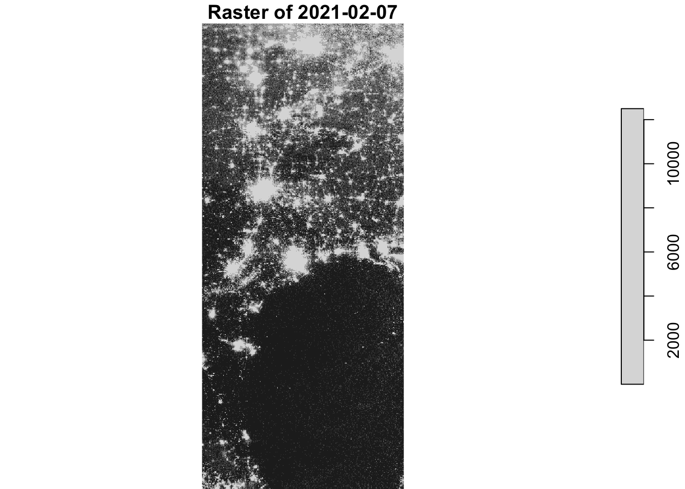
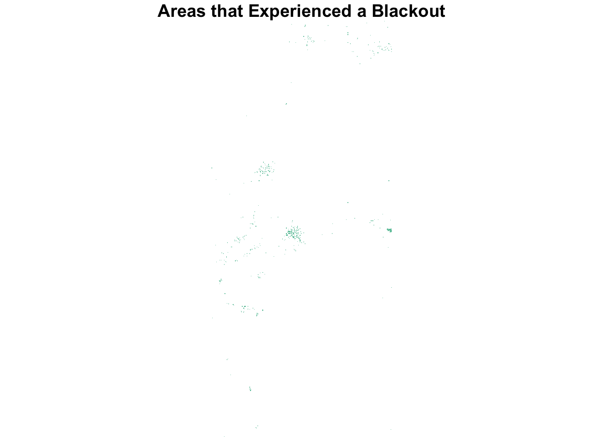
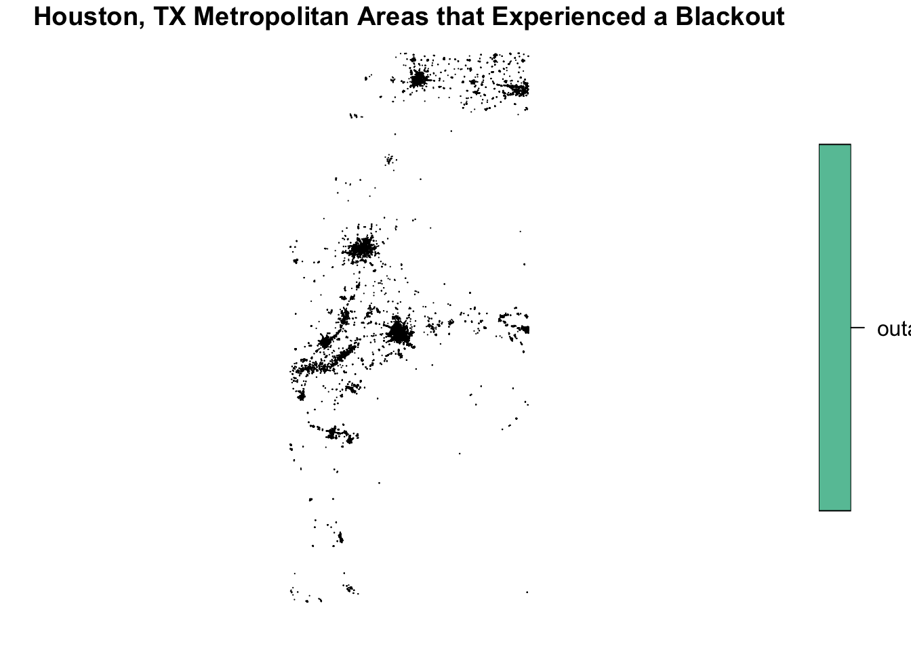
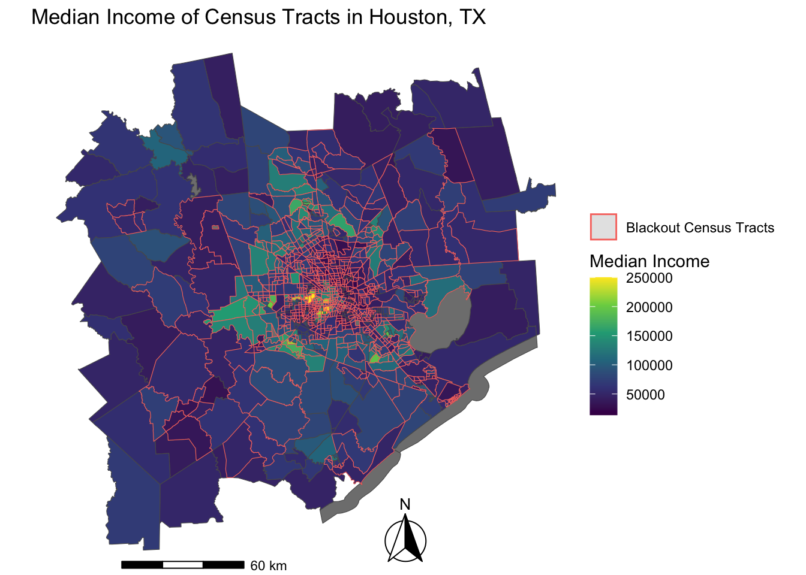
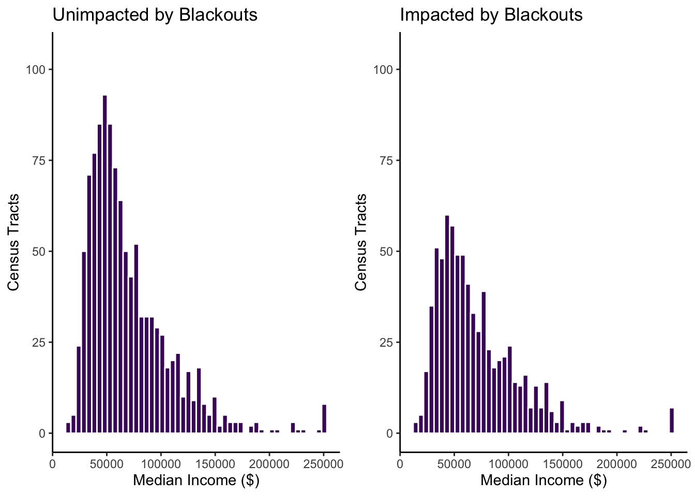

library(tidyverse)
library(sf)
library(stars)
library(terra)
library(dplyr)
library(spData)
library(spDataLarge)
library(tmap)
library(raster)
library(ggspatial)
library(cowplot)Overview
“In February 2021, the state of Texas suffered a major power crisis, which came about as a result of three severe winter storms sweeping across the United States on February 10–11, 13–17, and 15–20.”1 For more background, check out these engineering and political perspectives.
In the following exploration adapted from Dr. Ruth Oliver we will be:
- estimating the number of homes in Houston that lost power as a result of the first two storms
- investigating if socioeconomic factors are predictors of communities recovery from a power outage
Analysis will be based on remotely-sensed night lights data, acquired from the Visible Infrared Imaging Radiometer Suite (VIIRS) onboard the Suomi satellite. In particular, you will use the VNP46A1 to detect differences in night lights before and after the storm to identify areas that lost electric power.
To determine the number of homes that lost power, you link (spatially join) these areas with OpenStreetMap data on buildings and roads.
To investigate potential socioeconomic factors that influenced recovery, you will link your analysis with data from the US Census Bureau.
Highlights:
- load vector/raster data
- simple raster operations
- simple vector operations
- spatial joins
Data
Night lights
NASA’s Worldview was used to explore the data around the day of the storm. There are several days with too much cloud cover to be useful, but 2021-02-07 and 2021-02-16 provide two clear, contrasting images to visualize the extent of the power outage in Texas.
VIIRS data is distributed through NASA’s Level-1 and Atmospheric Archive & Distribution System Distributed Active Archive Center (LAADS DAAC). Many NASA Earth data products are distributed in 10x10 degree tiles in sinusoidal equal-area projection. Tiles are identified by their horizontal and vertical position in the grid. Houston lies on the border of tiles h08v05 and h08v06. We therefore need to download two tiles per date.
Roads
Typically highways account for a large portion of the night lights observable from space (see Google’s Earth at Night). To minimize falsely identifying areas with reduced traffic as areas without power, we will ignore areas near highways.
OpenStreetMap (OSM) is a collaborative project which creates publicly available geographic data of the world. Ingesting this data into a database where it can be subsetted and processed is a large undertaking. Fortunately, third party companies redistribute OSM data. We used Geofabrik’s download sites to retrieve a shapefile of all highways in Texas and prepared a Geopackage (.gpkg file) containing just the subset of roads that intersect the Houston metropolitan area.
Houses
Building data was obtained from OpenStreetMap. We again downloaded from Geofabrick and prepared a GeoPackage containing only houses in the Houston metropolitan area.
Socioeconomic
We cannot readily get socioeconomic information for every home, so instead we obtained data from the U.S. Census Bureau’s American Community Survey for census tracts in 2019. The folder ACS_2019_5YR_TRACT_48.gdb is an ArcGIS “file geodatabase”, a multi-file proprietary format that’s roughly analogous to a GeoPackage file.
You can use st_layers() to explore the contents of the geodatabase. Each layer contains a subset of the fields documents in the ACS metadata.
The geodatabase contains a layer holding the geometry information, separate from the layers holding the ACS attributes. We combined the geometry with the attributes to get a feature layer that sf can use.
##Exploration
Data was loaded in and converted to a stars object in order to be used with the sf package. The night light tiles were combined to form mosaics for February 7th, 2021 and February 16th, 2021.
# read in night lights tiles
night1 <- read_stars('data/VNP46A1/VNP46A1.A2021038.h08v05.001.2021039064328.tif')
night2 <- read_stars('data/VNP46A1/VNP46A1.A2021038.h08v06.001.2021039064329.tif')
night3 <- read_stars('data/VNP46A1/VNP46A1.A2021047.h08v05.001.2021048091106.tif')
night4 <- read_stars('data/VNP46A1/VNP46A1.A2021047.h08v06.001.2021048091105.tif')
# check class of night light tiles
class(night1)[1] "stars"# combine tiles into stars object for 2021-02-07 and 2021-02-16
night_07 <- st_mosaic(night1, night2)
night_16 <- st_mosaic(night3, night4)
# view 2021-02-07 raster
plot(night_07, main = "Raster of 2021-02-07")downsample set to 6
To find the change in night lights intensity (presumably) caused by the storm we will create a blackout mask. In order to do this we will be reclassifying the difference between the two rasters. We will be classifying any location that experienced a drop of more than 200 nW cm-2sr-1 experienced a blackout, and any location less than this will be classified to a NA
# find the change in night light intensity between the two dates
light_difference <- night_07-night_16
# check class of difference data created
class(light_difference)[1] "stars"# reclassifying raster to show blackouts above 200, and label areas that experienced an outage outage, and that didn't NA
light_difference_outage <- cut(light_difference, c(200, Inf), labels = 'outage')
#show where blackouts were experienced
plot(light_difference_outage, main = "Areas that Experienced a Blackout")downsample set to 6
The blackout mask will then be vectorized and fixed for any invalid geometries.
# vectorize the blackout mask to make this a spatial feature
blackouts <- st_as_sf(light_difference_outage) %>%
st_make_valid()
# represents outages in houston above 200
plot(blackouts, main = "Houston, TX Metropolitan Areas that Experienced a Blackout")
The vectorized mask was then cropped to our region of interest of Houston, TX with the following coordinates being utilized: (-96.5, 29), (-96.5, 30.5), (-94.5, 30.5), (-94.5, 29). The blackout mask was then cropped to the size of Houston , TX and ultimately reprojected to EPSG:3083. The EPSG:3083 is also known as NAD83 / Texas Centric Albers Equal Area.
# defining houston coordinates
houston <- cbind(x = c(-96.5, -96.5, -94.5, -94.5, -96.5),
y = c(29, 30.5, 30.5, 29, 29))
#turn houston coordinates into polygon
houston <- st_sfc(st_polygon(list(houston)), crs = 4326)
# create a mask for the houston area
houston_mask <- st_intersects(blackouts, houston, sparse = FALSE)
# crop the blackout_mask to the houston region of interest
houston_blackouts <- blackouts[houston_mask,]
# reprojecting houston blackouts to Texas specific Datum
houston_blackouts_reproj <- st_transform(houston_blackouts, crs = 3083)
# plot houston blackouts
plot(houston_blackouts_reproj, main = "Blackouts in Houston")We then excluded highways, and created a 200 meter buffer to include buildings outside of 200 meters from a highway. Additionally we filtered to residential buildings only within the blackout mask utillizing SQL querying. These processes allow us to identify the number of homes impacted by the blackouts.
# creates the query to select motorways
highway_query <- "SELECT * FROM gis_osm_roads_free_1 WHERE fclass='motorway'"
# load highway data that fulfills query
highways <- st_read("data/gis_osm_roads_free_1.gpkg", query = highway_query)Reading query `SELECT * FROM gis_osm_roads_free_1 WHERE fclass='motorway''
from data source `/Users/melissawidas/Documents/Github/mwidas.github.io/blog-posts/2023-12-01-houston-outages/data/gis_osm_roads_free_1.gpkg'
using driver `GPKG'
Simple feature collection with 6085 features and 10 fields
Geometry type: LINESTRING
Dimension: XY
Bounding box: xmin: -96.50429 ymin: 29.00174 xmax: -94.39619 ymax: 30.50886
Geodetic CRS: WGS 84# reproject highwyas to crs 3083
highways_reproj <- st_transform(highways, crs = 3083)
# identify areas within 200m of all highways
highways_buffer <- st_buffer(highways_reproj, dist = 200) %>%
st_union()
# find areas that had blackouts that are further than 200m
blackouts_outside_highway <- st_difference(houston_blackouts_reproj, highways_buffer)
# blackouts outside of the highway buffer should be less than all of the houston blackouts
nrow(blackouts_outside_highway)<nrow(houston_blackouts_reproj)[1] TRUE# creates the query to select residential buildings
residential_query <- "SELECT * FROM gis_osm_buildings_a_free_1 WHERE (type IS NULL AND name IS NULL) OR type in ('residential', 'apartments', 'house', 'static_caravan', 'detached')"
# load buildings data that fulfills query
residential <- st_read("data/gis_osm_buildings_a_free_1.gpkg", query = residential_query)Reading query `SELECT * FROM gis_osm_buildings_a_free_1 WHERE (type IS NULL AND name IS NULL) OR type in ('residential', 'apartments', 'house', 'static_caravan', 'detached')'
from data source `/Users/melissawidas/Documents/Github/mwidas.github.io/blog-posts/2023-12-01-houston-outages/data/gis_osm_buildings_a_free_1.gpkg'
using driver `GPKG'
Simple feature collection with 475941 features and 5 fields
Geometry type: MULTIPOLYGON
Dimension: XY
Bounding box: xmin: -96.50055 ymin: 29.00344 xmax: -94.53285 ymax: 30.50393
Geodetic CRS: WGS 84# reproject buildings to crs 3083
residential_reproj <- st_transform(residential, crs = 3083)
# dataframe where residential buildings are kept that are in houston outside of our highway buffer
blackout_residential <- residential_reproj[blackouts_outside_highway, , op = st_intersects]
# count number of buildings in blackout areas
nrow(blackout_residential)[1] 157411#counting the number of residential buildings that got hit
print(paste0(nrow(blackout_residential), ' residential buildings were affected by the blackouts'))[1] "157411 residential buildings were affected by the blackouts"Investigate socioeconomic factors
To explore if blackouts were correlated with socioeconomicfactors like median income, census tract data was used. We used spatial joins to join the census tract data, and buildings that were and were not impacted by blackouts.
# load data that contains census tract geometries
texas_census <- st_read("data/ACS_2019_5YR_TRACT_48_TEXAS.gdb", layer = "ACS_2019_5YR_TRACT_48_TEXAS")Reading layer `ACS_2019_5YR_TRACT_48_TEXAS' from data source
`/Users/melissawidas/Documents/Github/mwidas.github.io/blog-posts/2023-12-01-houston-outages/data/ACS_2019_5YR_TRACT_48_TEXAS.gdb'
using driver `OpenFileGDB'
Simple feature collection with 5265 features and 15 fields
Geometry type: MULTIPOLYGON
Dimension: XY
Bounding box: xmin: -106.6456 ymin: 25.83716 xmax: -93.50804 ymax: 36.5007
Geodetic CRS: NAD83# reproject census data to crs 3083
texas_census_reproj <- st_transform(texas_census, crs = 3083)
# load data that contains census tract data and income data
texas_income <- st_read("data/ACS_2019_5YR_TRACT_48_TEXAS.gdb", layer = "X19_INCOME")Reading layer `X19_INCOME' from data source
`/Users/melissawidas/Documents/Github/mwidas.github.io/blog-posts/2023-12-01-houston-outages/data/ACS_2019_5YR_TRACT_48_TEXAS.gdb'
using driver `OpenFileGDB'# create data frame that contains median income data and geoID
texas_median_income <- texas_income %>%
dplyr::select(B19013e1, GEOID) %>%
rename(median_income = B19013e1, GEOID_Data = GEOID)
# join the income data to census tract geometries in Texas
texas_income_census <- left_join(texas_census_reproj, texas_median_income, by = "GEOID_Data")
# join the census tract data with residential buildings determined to be impacted by blackouts
texas_census_blackouts <- st_filter(texas_income_census, blackout_residential) To compare incomes of impacted census tracts and unimpacted census tracts a map of median income per census tract with the tracts that had blackouts outlined was created.
print(paste("Income of Census tracts in Texas is the same CRS as Houston boundary:", (st_crs(houston)==st_crs(texas_income_census))))[1] "Income of Census tracts in Texas is the same CRS as Houston boundary: FALSE"#transforming houston boundary to Texas datum
houston_reproj <- st_transform(houston, crs = 3083)
# data frame that has all median income is in houston census tracts
houston_income_census <- st_filter(texas_income_census, houston_reproj)
# create visualization
median_income_map <- ggplot() +
geom_sf(data = houston_income_census, # plot the median income of all of houston
aes(fill = median_income)) +
scale_fill_viridis_c() +
geom_sf(data = texas_census_blackouts, aes(color = "red", # outline census tracts that experienced blackouts in red
fill = median_income)) +
scale_color_hue(labels = c("Blackout Census Tracts")) + # alter legend titles
labs(fill='Median Income') +
theme_void() +
annotation_north_arrow( # add north arrow
height = unit(1.5, "cm"),
width = unit(1.5, "cm"),
pad_x = unit(7.5, "cm"),
pad_y = unit(0.15, "cm"),
rotation = NULL,
style = north_arrow_fancy_orienteering
) +
annotation_scale( # add scale bar
plot_unit = NULL,
bar_cols = c("black", "white"),
line_width = 1,
height = unit(0.15, "cm"),
pad_x = unit(2, "cm"),
pad_y = unit(0.15, "cm"),
text_pad = unit(0.15, "cm"),
text_cex = 0.7,
text_face = NULL,
text_family = "",
tick_height = 0.6
) +
labs(title= "Median Income of Census Tracts in Houston, TX", color = "") # add map title
median_income_map
To further explore the impacts of blackouts on census tracts the distribution of income in impacted and unimpacted tracts was plotted.
# find areas that did not have blackouts within the houston area
unimpacted <- houston_income_census[texas_census_blackouts, , op = st_difference]
# create a histogram showing median income spread for homes in houston not impacted by blackouts
unimpacted_figure <- ggplot(data = unimpacted, aes(median_income)) +
geom_histogram(bins=50, fill = '#481467FF', color = 'white') +
labs(title = "Unimpacted by Blackouts", x = "Median Income ($)", y = "Census Tracts") +
theme_classic() +
ylim(0,105)
#unimpacted_figure
# create a histogram showing median income spread for homes in houston impacted by blackouts
impacted_figure <- ggplot(data = texas_census_blackouts, aes(median_income)) +
geom_histogram(bins=50, fill = '#481467FF', color = 'white') +
labs(title = "Impacted by Blackouts", x = "Median Income ($)", y = "Census Tracts") +
theme_classic() +
ylim(0,105)
# position histograms side by side for easier comparison
impact_unimpact_plot <- plot_grid(unimpacted_figure, impacted_figure, labels = c('', ''), label_size = 12)
impact_unimpact_plot
The median income of homes in Houston, TX affected and not affected by blackouts does not appear to have a significant difference. The blackouts do appear to have centered around the center of the city, but this area also has a wide variety of median incomes. Additionally, when comparing the median incomes of homes affected and not affected the distributions appear to be similar for the spread of wealth. Residents not impacted by the storm do appear to have slightly higher median incomes which could coincide with living farther outside the city center in the suburbs of Houston. A limitation of this analysis is that we did reduce the number of buildings counted that fell close to highways, which could be areas that have lower median incomes. Additionally, in exploring the power outages in Houston, TX we only compared the blackouts from the first two storms, without accounting for the third storm. Without accounting for the third storm the total number of outages that occurred is being underestimated.
Footnotes
Wikipedia. 2021. “2021 Texas power crisis.” Last modified October 2, 2021. https://en.wikipedia.org/wiki/2021_Texas_power_crisis.↩︎
Citation
BibTeX citation:
@online{widas2022,
author = {Widas, Melissa},
title = {Geospatial {Blog} {Post}},
date = {2022-12-01},
url = {http://mwidas.github.io/2023-12-01-houston-outages},
langid = {en}
}
For attribution, please cite this work as:
Widas, Melissa. 2022. “Geospatial Blog Post.” December 1,
2022. http://mwidas.github.io/2023-12-01-houston-outages.